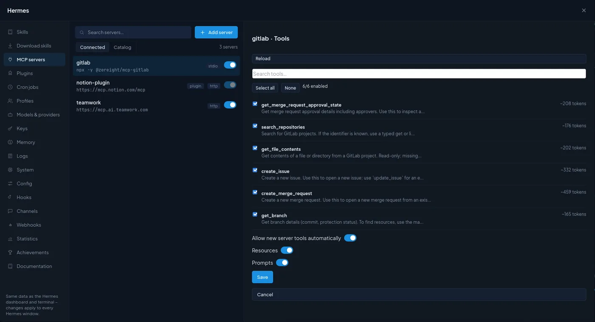
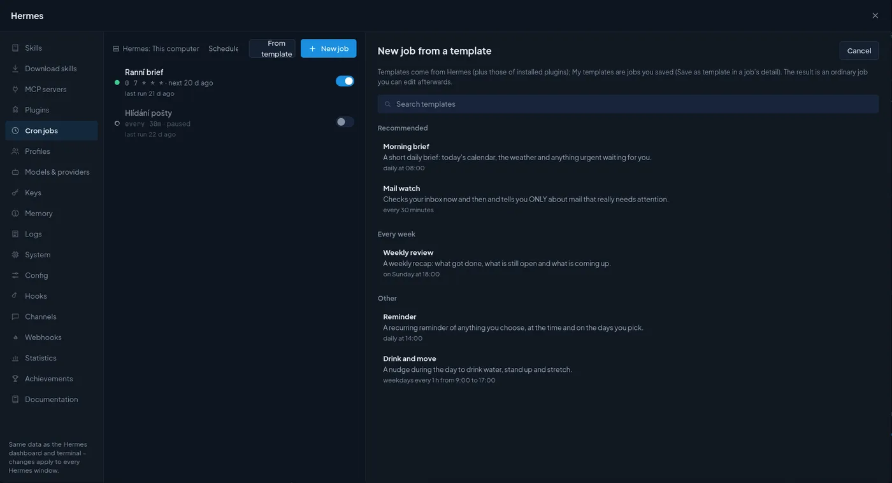
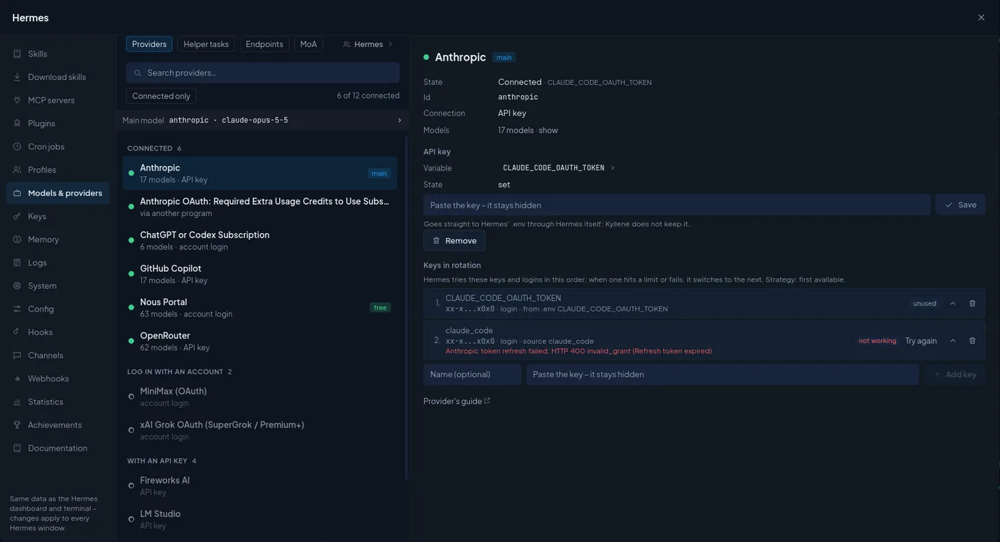
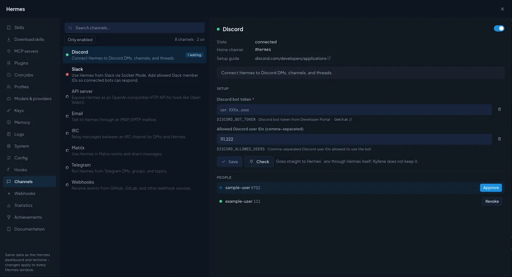

Kyllene
KylleneManage Hermes in Kyllene
Everything you would otherwise do in Hermes' terminal or its web dashboard (skills, MCP servers, plugins, cron jobs, profiles, keys, memory, logs, hooks, webhooks, messaging channels, config) is in the Hermes window.
Open it with the sliders icon in the top bar, Ctrl+Shift+H, the top menu Hermes, or the palette (Ctrl+K,
every tab has its own entry). The window works on the same data as the Hermes dashboard and terminal: a change
here applies to every Hermes window, and a change made in the terminal shows up here.
Most tabs are a list on the left and the detail of the selected item on the right. Where Hermes has a catalog, a switch at the top flips between what you have (Installed / Connected) and what you can add (Catalog).
Whose settings? Hermes keeps skills, keys, models, memory and hooks per profile (an agent). Tabs that work per profile have a Hermes button at the top: it shows whose data you see and lets you switch to another agent.
Secrets (API keys, tokens) you type in this window go straight into Hermes' .env through Hermes itself, in
masked fields. Kyllene never keeps them and never shows them again, only Hermes' short preview (sk-…a1b2).
Tabs: Skills · Download skills · MCP servers · Plugins · Cron jobs · Profiles · Models & providers · Keys · Memory · Logs · System · Config · Hooks · Channels · Webhooks · Statistics · Achievements · Documentation
Skills
Skills are Hermes' procedural memory: a SKILL.md with instructions it loads when a task matches.
- The list is grouped by category, with a search, a filter by origin (Built-in, Own = written by the agent or by you, External folder, From the hub) and Only switched off. The switch in each row turns a skill off or on for this profile.
- The detail shows the origin, category, how often it was used, its folder, the description and the full text
(Source flips between the formatted text and the raw
SKILL.md). Own skills can be edited and deleted; built-in ones only switched off (a Hermes update would overwrite an edit). - New skill: Name, Category, When to use it (one line starting with "Use when …"; Hermes decides from it when to load the skill) and Instructions.
Download skills
The Skills Hub: skills other people and Nous Research published.
- Recommended (Hermes' picks from all hub sources), Official catalog (every optional skill shipped with Hermes, by category), or search the hub by a word (pdf, calendar).
- The detail shows the source, its trust level and a safety check with every finding (for example "pip install without version pinning", with the file and line) and the full text, before you install.
- Install downloads the skill into this computer's Hermes; Update skills updates every skill installed from the hub.
MCP servers
MCP servers give Hermes new tools (GitLab, Notion, a database, your own service).

- Connected: your servers with their type (stdio = a local program, http = remote) and a switch. Adding, removing or switching off applies within a minute; editing an enabled server needs a gateway restart (Kyllene tells you).
- Add server: Name, Type (Remote (URL) with an address, or Local program with a command),
Environment variables (one
NAME=valueper line; keys go to.env) and Login (No login; API key in header, a token sent with every request and stored in.env; or OAuth login, where Hermes opens a browser once and you approve access). - Catalog: ready-made servers (Asana, Airtable, n8n…) with what each needs; most sign in with OAuth.
- Test connection connects, lists the tools and disconnects.
- Tools: choose which of the server's tools Hermes may use. Each tool shows its description and roughly how many tokens its definition costs in every request, so switching off tools you never use makes every turn cheaper. Allow new server tools automatically, Resources and Prompts decide what else the server may add.
- Activate in open conversations connects a new server in conversations that are already open, without restarting them (Hermes otherwise picks it up only in new conversations).
Plugins
- Installed: your own plugins and Hermes' built-in ones, with a switch each. A plugin marked not activated is installed but off.
- Providers at the top: the active memory provider (set up in Memory) and the context engine (how long conversations are compressed). Both are chosen when a conversation starts, so a change applies to new conversations.
- Catalog: plugins you can install, with Official only (maintained by Nous Research) and Desktop too (plugins for the official Hermes Desktop app, which do nothing in Kyllene and are hidden by default).
- A plugin with settings or its own MCP server shows them in its detail; Activate in open conversations connects it in conversations that are already open.
Cron jobs
A cron job sends Hermes a prompt on a schedule (a morning brief every day at 7:00, a mail watch every 30 minutes) and delivers the answer where you choose. Jobs are run by the Hermes gateway; the top line shows on which Hermes (this computer or a server) and whether its scheduler is running.

- From template: Hermes' templates (Morning brief, Mail watch, Weekly review, Reminder, Drink and move…) and My templates (jobs you saved with Save as template, on every computer). The result is an ordinary job you can edit.
- New job:
| Field | What it does |
|---|---|
| Agent / Script | Agent: a model runs the prompt on every run (costs tokens). Script: Hermes runs a script from its scripts folder without any model; its output is the result. |
| Name, What should Hermes do | Each run is a new conversation without context, so write the prompt so it stands on its own. |
| Schedule | A cron expression (0 7 * * *), an interval (every 30m), weekly (every monday 9am) or one-off (in 2h, 2026-11-01T09:00); the chips fill in common ones. |
| Deliver to | Only save or a connected messaging platform (Channels). |
| Skills, Model, Thinking | What the run loads and which model runs it (empty = Hermes' default). |
| Run the agent | Always, When a script changes or When a URL changes: the cheap check runs on schedule without a model and the agent runs only once the output changes. The cheapest way to watch something. |
| Folder, Runs | The working folder of the run, and how many runs before the job stops (empty = keep running). |
| Create paused | Create it switched off. |
- A job's detail has Run now, Edit, Save as template, Delete and its History; a click on a run opens its output in the right panel.
Profiles
Every Hermes profile is an agent with its own model, personality, memory, skills and keys.
- The list shows each profile with its model and description, grouped by your categories (Category actions).
- New profile is a short wizard: Basics (name, description, model, start from a fresh profile or a copy, take over the keys), then MCP servers, Skills, Channels, Variables and a Summary. The description matters: Hermes uses it to decide which profile gets a Kanban task.
- The detail: the model (changeable), whether its gateway runs, its folder, description, Personality
(
SOUL.md, who the agent is and how it talks), its skills and tool sets with switches, and its own variables (.env). Changes apply to the profile's new conversations. - Export saves a profile to an archive (choose settings, skills, memory, cron jobs, code); secret values are
never put in. Import creates a profile from such an archive or from
hermes profile export. - Agent detail opens the agent's own window (look, skills, memory, cron, groups).
Models & providers
Who Hermes can talk to, and which model does what.

- Providers: every provider Hermes knows, connected ones first (Connected only hides the rest). Sign in with an account (ChatGPT/Codex, Nous Portal…) or paste an API key; Provider's guide explains where to get one. A connected provider shows its models, its keys in rotation (Hermes tries them in order and switches when one hits a limit or fails; Try again clears an error, the arrows change the order) and Remove.
- Helper tasks: which model does the side work (image reading, context compression, conversation titles, smart approvals, the review after a turn, Kanban task splitting…). auto = the main model; give cheap work a cheaper model here.
- Endpoints: your own OpenAI-compatible server, such as a local LM Studio, Ollama or vLLM, or a company proxy.
- MoA (Mixture of Agents): presets where several reference models answer at once and an aggregator merges their answers, with temperatures and a time limit.
The main and backup model for new conversations are set in Settings › Models.
Keys
Every variable in Hermes' .env, grouped (Model providers, Tools, …) with what each is for. Only set shows
the ones with a value, Advanced adds base-URL overrides and debug switches. A key's detail sets a new value or
Removes it (also from Hermes' credential pool). Add key stores your own variable, for example a token a
skill or MCP server needs.
Memory
What Hermes remembers between conversations. It reads both lists at the start of every conversation.
- Agent's notes (
MEMORY.md) and About you (USER.md), each entry with Edit and Delete, plus Add an entry. The counter shows how full each list is (Hermes has a size limit). - External memory: a memory provider on top of the built-in lists (from a plugin). Hermes refuses a provider that is not ready; new conversations pick up the change.
- The Hermes button at the top switches to another agent's memory.
Logs
Hermes' logs: the file (agent.log, gateway…), minimum level, one part of Hermes, how many lines, a search, and
Follow to keep reading new lines. The first place to look when something does not work.
System
- Hermes: version, whether an update is available (with what it would bring), how it was installed, the config
version, its home folder. Update runs
hermes update, Check looks for a new version, Doctor runshermes doctor(config, keys, dependencies, services). - Gateway: state, mode, running sessions, health. The gateway runs cron jobs, Kanban tasks and messaging bots.
Restart gateway (
hermes gateway restart) interrupts the cron jobs, Kanban tasks and bot conversations that are running at that moment. - Computer: machine, CPU, memory, disk, uptime, Python.
Kyllene checks itself after every Hermes update and tells you if something it uses changed. The Hermes versions a Kyllene release was tested with are in Settings › About.
Config
All of Hermes' config.yaml. Form lists every setting by section (General, Agent, Terminal, Display, Voice,
Text to speech, Speech to text, Memory, Security…) with Hermes' own description; Changed shows only what you
set yourself. Text edits the YAML directly. Only changed values are written; the rest of the file stays as it is.
Hooks
Scripts Hermes runs when something happens. A hook runs on your computer with your rights, so add only scripts you know.
- Shell: a command for an event (
post_tool_call,on_session_end…), optionally only for some tools (a regex such asterminal|write_file), with a timeout. Hermes runs a hook only after you approve it once (Approve now in the form). Try it fires it with a sample event; Check hooks runshermes hooks doctor. - Gateway: Python hooks in
~/.hermes/hooksthat react to gateway events (agent:start,agent:end…); a broken one shows why. - Outbound webhooks: send Hermes' events to your URL (signed or not).
Channels
Messaging platforms Hermes can be reached through (Hermes calls this the gateway): Discord, Telegram, Slack, e-mail, Matrix, WhatsApp, Signal and more than twenty others.

- Each channel shows its state and a switch. The detail has the setup fields (tokens, allowed users) with a link to where you get them, Save and Check (asks Hermes whether it is connected).
- People: users waiting for approval (Approve) and approved ones (Revoke).
- Threads of Hermes' bots on this computer or on a server show up under Gateway in the left menu (the last 30 days; search finds older ones). They open as normal conversations, and what you write there goes to the channel too.
Webhooks
Let other services (GitLab, GitHub, n8n…) wake Hermes with an HTTP call. Webhooks are off until you Switch on
(this restarts the gateway). New webhook: Name, Events to accept, What should Hermes do ({placeholders}
take values from the payload; empty = the raw payload goes to the agent), where the answer goes and which skills it
loads. The detail shows the address to give the other service, its signature secret and Send a test.
Statistics
Conversations, model calls, tokens and the estimated price over 7, 30 or 90 days; tokens per day; usage per model, the most used tools and skills, and what the helper tasks cost. Kyllene's own Overview has more (per agent, per project, limits).
Achievements
Hermes' achievements (tool chains, debugging, autonomy…) with tiers and progress. Rescan scans your conversations again; New achievement creates your own (see Settings › Widgets › Custom achievements).
Documentation
Hermes' own documentation, readable and searchable inside the app; Open online opens the same page on hermes-agent.nousresearch.com.